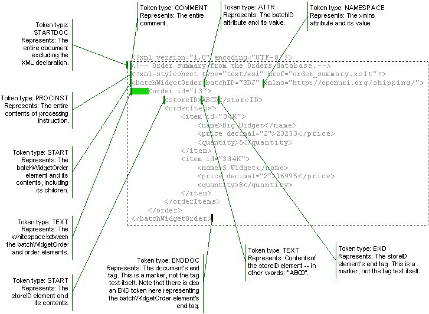

Understanding XML Tokens
An XML cursor (an instance of the XmlCursor interface) moves from token to token as your code moves the cursor. When you move a cursor using a method such as toParent, toFirstAttribute, toPrevSibling, and so on, the cursor moves to the token fitting the description. If there is no appropriate token to move to, the cursor remains where it is, and false is returned to indicate that it didn't move. For example, if the cursor is at the ENDDOC token (the last tag in the document), a call to the toNextSibling method will not move the cursor and will return false to indicate that the move was unsuccessful.
Note that while you can call the XmlCursor.currentTokenType method to find out which token type the cursor is at, you might find it more convenient to use a method such as isEnddoc. The XmlCursor interface provides several methods that make it easy to discover whether the cursor you're moving is at the token you're looking for. These methods, such as isStart, isAttr, isText, and so on, return a boolean value that indicates whether the cursor is at the token type in question.
Tokens are represented by constants in the TokenType class, an inner class of the XmlCursor interface. Each has a constant you can use in switch statements to perform by-token actions. The following table lists the token types:
| Token Type | Switch Constant | Description |
| STARTDOC | INT_STARTDOC | Represents the start of the XML. Always the first token. The document element itself is represented by a START token, not the STARTDOC token. |
| ENDDOC | INT_ENDDOC | Represents the end of the XML. Always the last token. |
| START | INT_START | Represents the start of an element. |
| END | INT_END | Represents the end of an element. The END token has no value, but marks the element's end. |
| TEXT | INT_TEXT | Represents text. |
| ATTR | INT_ATTR | Represents an attribute. ATTR tokens are allowed to appear after a STARTDOC or START token. |
| NAMESPACE | INT_NAMESPACE | Represents a namespace (xmlns) attribute. Also only allowed after START or STARTDOC tokens. |
| COMMENT | INT_COMMENT | Represents a comment. |
| PROCINST | INT_PROCINST | Represents a processing instruction. |
As you use a cursor to navigate through XML, you can use one of the convenience methods described above to discover whether you're at the token you're looking for, or use the XmlCursor.currentTokenType method to discover the current token's type. The following figure illustrates example locations for token types:

Here's a bit of code illustrating how you might use a Java switch statement to test for the START token type.
// Take an incoming XmlObject and insert a cursor.
XmlCursor documentCursor = xmlDoc.newCursor();
/*
* Loop through the document, passing the cursor when it stops at each token
* to a function designed to discover the token type. Continue the loop
* as long at the cursor is at a token (until it reaches the end).
*/
while (!documentCursor.toNextToken().isNone())
{
/*
* Use the intValue method to return the int corresponding to the
* current token type. If it is the value for INT_START,
* then you have a match.
*/
switch (cursor.currentTokenType().intValue())
{
case TokenType.INT_START:
// Print out the token type and a message.
System.out.println(cursor.currentTokenType() +
"; cursor is at the start of an element.");
break;
}
}
// Be sure to dispose of a cursor when you're finished.
documentCursor.dispose();
The scope of an XML cursor is the XML document in which it is created. For example, you can create a cursor at the orderItem element in the example earlier in this topic. If you then use that XmlCursor instance's toNextToken method to move the cursor until it won't move any further, you'll have reached the ENDDOC token. In this example, that's at the </batchWidgetOrder> tag. In other words, the cursor's scope is not limited to the element at which it was created.